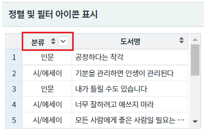
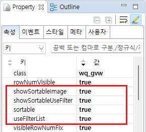
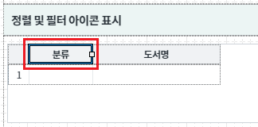
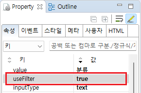
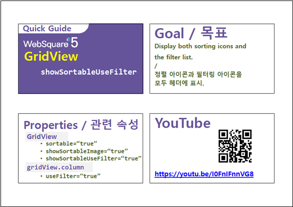

GridView의 컬럼에 정렬과 필터 기능이 모두 적용된 경우 GridView의 헤더에 정렬(sort) 아이콘와 필터(filter) 아이콘을 함께 표시하는 예제입니다.
정렬 및 필터 아이콘 표시
영역 [정렬 및 필터 아이콘 표시]에 있는 GridView의 헤더(header)를 확인합니다.
정렬 아이콘과 필터 아이콘이 함께 표시됩니다.
[브라우저(Chrome) 실행 예시]

GridView와 연결된 DataList 생성 및 연결 방법은 생략되었습니다.
STEP1. GridView의 속성을 정의합니다.
[필수] showSortableUseFilter="true" //[default: false, true] useFilterList와 showSortableImage 속성을 동시에 사용할 때 정렬 아이콘(sortable)과 사용자 정의 필터 아이콘(useFilterList) 모두를 헤더에 표시.
[필수] showSortableImage="true" //[default: false, true] 정렬 가능한 컬럼의 헤더에 정렬 이미지를 출력.
[필수] useFilterList="true" //[default: false, true] 필터링 대상 값을 목록으로 표시.
[선택] sortable="true" //[default: false, true] gridView의 헤더 클릭을 통한 데이터 정렬 지원 여부. (컬럼 단위로도 설정이 가능.
그림 1.웹스퀘어5 SP5 스튜디오의 Property View(속성창) 예시

필터 기능 및 정렬 기능을 사용할 컬럼의 속성을 지정합니다. (정렬 기능은 GridView의 속성 sortable을 true로 지정하면 모든 컬럼에 정렬 기능이 사용으로 설정됩니다.)
[필수] useFilter="true" //[default:false, true] 필터 사용 여부.
[선택] sortable="true" //[default: false, true] 헤더 컬럼에 데이터 정렬 기능을 설정. (GridView 전체에도 설정이 가능.)
그림 2.웹스퀘어5 SP5 스튜디오의 Design 탭 예시 - 헤더 컬럼 선택

그림 3.웹스퀘어5 SP5 스튜디오의 Property View(속성창) 예시

[소스 코드 예시]
<!-- gridView 의 소스 본문 예시 --> <w2:gridView showSortableUseFilter="true" showSortableImage="true" useFilterList="true" sortable="true" dataList="data:dlt_books_2"> <!-- 중략 --> <w2:header id="header1" style=""> <w2:row id="row1" style=""> <w2:column useFilter="true" value="분류" id="column2"></w2:column> <!-- 중략 --> </w2:row> </w2:header> <!-- 중략 --> </w2:gridView>
showSortableUseFilter
useFilterList
sortable
showSortableImage
[header column] sortable
[header column] useFilter
[웹스퀘어5 SP5 개발 가이드] GridView
링크 : https://docs1.inswave.com/sp5_user_guide/86bdcf48029b958b
[웹스퀘어5 SP5 개발 가이드] GridView 정렬
링크 : https://docs1.inswave.com/sp5_user_guide/86bdcf48029b958b#7bf6021f821511f7
[웹스퀘어5 SP5 개발 가이드] GridView 필터링
링크 : https://docs1.inswave.com/sp5_user_guide/86bdcf48029b958b#6842af3d03705a2b
[웹스퀘어5 SP5 개발 가이드] GridView 정렬/필터링 아이콘 표시 (showSortableUseFilter)
링크 : https://docs1.inswave.com/sp5_user_guide/86bdcf48029b958b#af04fb378a307a2a
GridView 정렬/필터링 아이콘 표시 (showSortableUseFilter)
링크 : https://youtu.be/I0FnIFnnVG8
